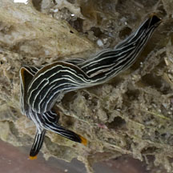

|
|
| sea slugs text index | photo index |
| Phylum Mollusca > Class Gastropoda > sea slugs > Order Sacoglossa |
| Thuridilla
slug Thuridilla sp.* Family Plakobranchidae updated Jun 2020 Where seen? More often seen by divers, this slender striped slug is sometimes seen on the intertidal near reefs on our Southern shores. Some consider Thuridilla gracilis and Thuridilla ratna to be the same species. Features: 1-2cm. Body long, slender, with a pair of very short 'wings' (called parapodia). Dark to black with very thin white stripes along the body and a thin orange edge on the short 'wings'. It has two long tentacles with orange tips. |
 St. John's Island, Apr 12 |
||
*Species are difficult to positively identify without close examination.
On this website, they are grouped by external features for convenience of display.
| Thuridilla slugs on Singapore shores |
On wildsingapore
flickr
|
| Other sightings on Singapore shores |
| Thuridilla species recorded for Singapore from Tan Siong Kiat and Henrietta P. M. Woo, 2010 Preliminary Checklist of The Molluscs of Singapore. ^Kathe R. Jensen. 2009. Sacoglossa (Mollusca: Gastropoda: Opisthobranchia) from Singapore. **from WORMS
|
Links
References
|